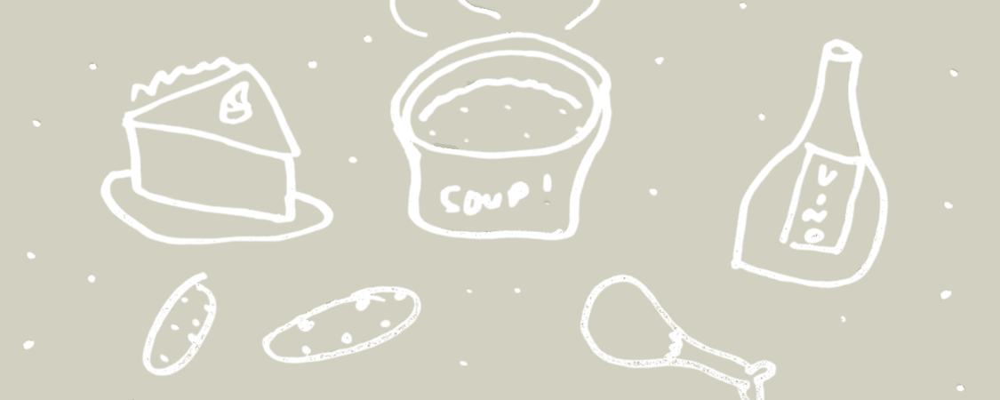

I wrote 52 articles for Tasting Table, a food and culture publication, on everything from food history and fast food to city guides. Many were also syndicated on MSN and Yahoo.
- Role
- Freelance Writer (features and news)
- Company
- Tasting Table
- Timeline
- March 2025 – February 2026, then June – September 2026
- Tools
- Tasting Table’s in-house CMS, Getty Images
12 Vintage Cookbooks That Are Worth A Fortune Today
Cookbooks · July 11, 2025
Twelve historical cookbooks, from ancient Roman recipes to 20th-century classics, with what makes each one significant and what collectors have paid for them.
Read the full article →
10 Bizarre And Disturbing Facts About Nutmeg
Food history · July 31, 2025
Nutmeg's trail from the Banda Islands through colonial conflict, plus its history in medicine and folklore, the health risks of too much, and how Connecticut got its nickname.
Read the full article →
9 Oddly Specific Food Festivals In Pennsylvania
City guides · September 20, 2025
Nine Pennsylvania festivals that each center on a single food or ingredient, with their origins and what you'll find there.
Read the full article →
Unwritten Rules To Know Before Visiting Sheetz
Fast food · February 5, 2026
A first-timer's guide to the gas station chain people are loyal to: how ordering and paying work, sandwich customizing, pickup, and the rewards program.
Read the full article →
The Coffee Brand That Fueled Old West Cowboys Is Still On Shelves Today
Food history · July 9, 2026
How Arbuckles' patented method for preserving roasted beans made it a cowboy staple in the 1800s, and how a Tucson restaurant owner revived the brand in 1974.
Read the full article →
Why This Discontinued Cut Of Lay's Chips May Never Make A Comeback
Food history · August 21, 2026
The rise and quick fall of Lay's kettle-cooked lattice-cut chips, and why their specialized design makes a return unlikely.
Read the full article →
More from Tasting Table
These are a few favorites. The rest of my articles are on my author page.
Browse all my Tasting Table articles →